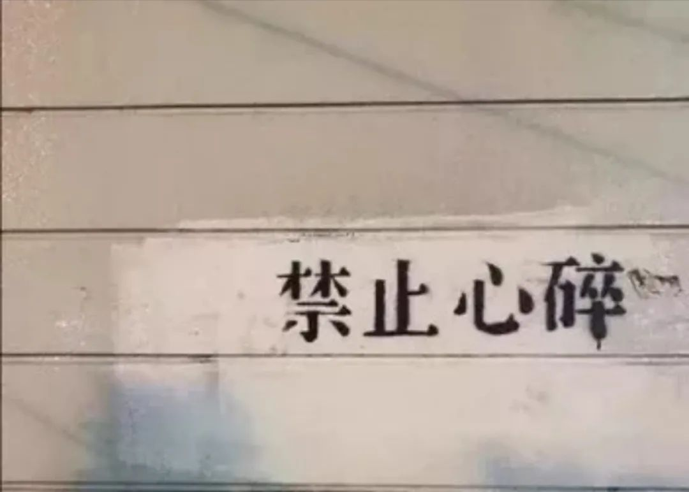
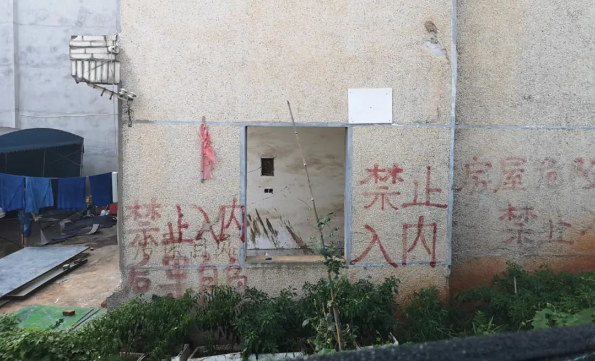
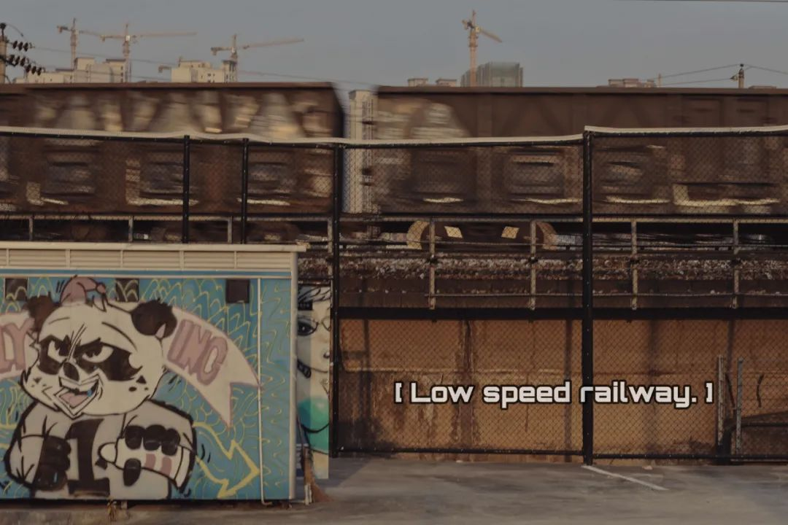
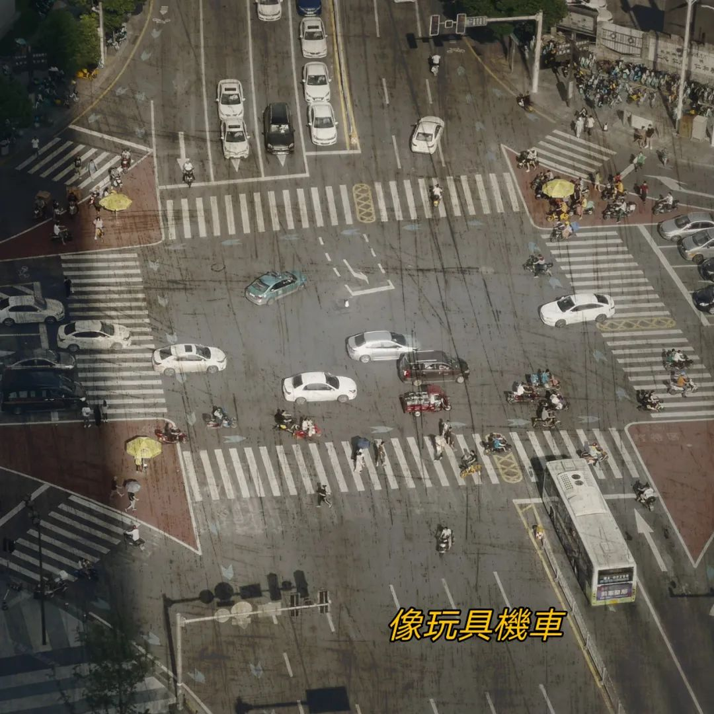
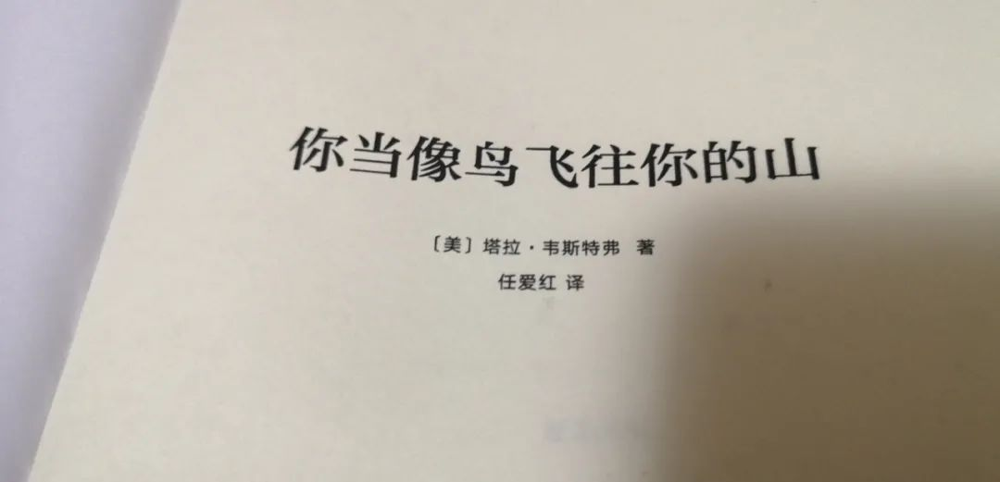
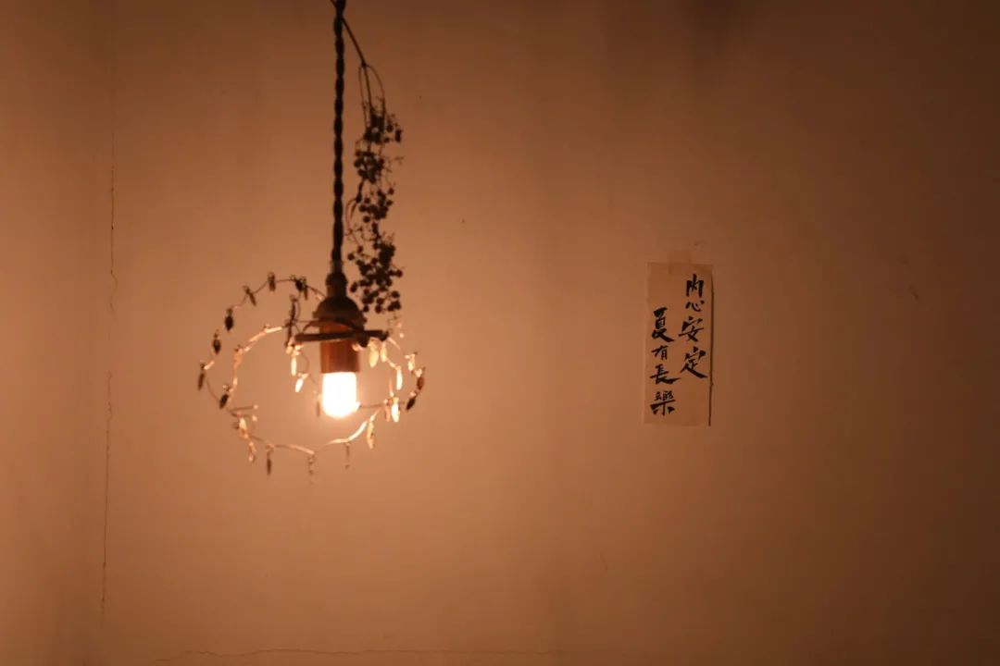
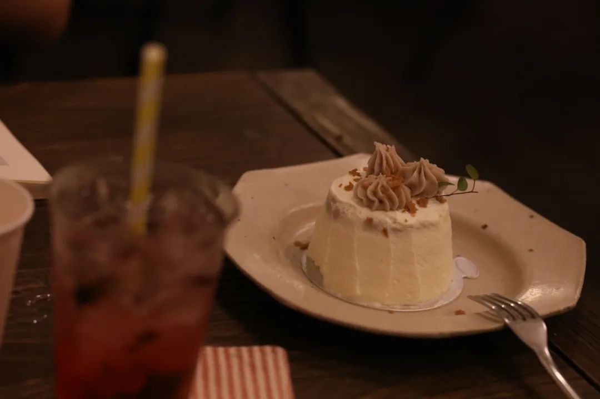

转眼间这个公众号就写了三年。破蛋推之后，一岁、两岁，到今天写的这篇三岁。算是缓缓随手记录自己想法的一个不错的地方吧。
每年的生日都在最热的夏天。前几天当我的网抑云终于到了Lv.10 之后，乐队的夏天也播出了。朋友圈里一位在长沙开黑胶唱片店的老板，分享起回忆十年前在长沙太平街Freedom House的音乐实验，以及那些当时看起来只是先锋、而今天已经把名姓变成文化符号的那些乐队。
每一代人都有自己的Golden Days，单词不非得指大学。区别在于，我是这个时代的淘金者，还是只在时代过去 淘洗完之后 去留得只剩怀念和纪念。去年在暑假的尾巴上写了一篇唱片店回忆札，图和视频都还是读高中的时候在太平街的飞鸟和鱼唱片店拍的。
为了不把我的生日推看起来像是一个摘抄本。我想再摘抄一段曹林老师的话：
新闻并不是一个每天都面对新奇之物的行业。相反，它会有不断的重复，热点的重复，问题的固化，框架的重复，程序的重复。这种重复常常带来周期性的职业疲倦。理想，可以让自己在这个行业走得稍远一些。
前几天选课的时候，就在一遍遍地排课程、看一看教学大纲。说来也很有趣：我们为什么会变衰老、怎么攻克癌症。这些听起来都是连小孩子眼睛里都会放光的内容，现在排到了我的博士课表里。以前博士还是一个遥远的名词、或者各路舆论作妖的地方。自己开始攻读的时候，变成用沉重的力量推开人类知识的边界。
去年发生日推文的时候，人在香港。当时局势没有很明朗，正好下午台风过境，港府在气象挂出了八号风球。意思是全港凭这个通告，都可以带薪放假。我在旺角的酒店里，看风卷起一阵阵的雨从窝打老道一直吹到何文田霓虹观感的要素：一个是霓虹本身、一个是氤氲加持雨雾是最好的氤氲、高容积率地区是最实在的霓虹同样是出门，后来去的皖赣边界，人文观感就很不一样。从黄山，到宏村西递呈坎潜口，最后从景德镇南昌回长沙。心和人都在路上。这一年里学习最认真的时候，莫过于在厦门参加培训。白天上午听lecture，下午参加tutorial，高强度的学习好在有走得很前面的师兄、华为云的技术支持在一起往前。每天从住处去厦大，都要走一遍顶澳仔猫街。抽出一个晚上去了鼓浪屿，在环岛小道上听海风里夹杂着难懂的闽南方言。其实也没有那么难懂。就在去厦门的前不久，看了过去一年度里最优秀的剧作《我们与恶的距离》一部好看的台剧，为此还写了一篇影评。后来，也是在九月。九月底去了一趟兰州，灰暗而美丽，至今还能想起那时候给兰州的这个评价。西北，我还计划了一条从兰州西宁一直环过张掖阳关最后到敦煌的铁路线。这个毕业季我要是在茶卡盐湖一直待着，估计也是隔几天就要和朋友们say hi的频次。
肉眼可见的是，从兰州之后，生活正式另起一段：自闭而又有倾诉欲。
这些我现在看到标题，就知道整个这段时间都是自闭时光。一方面论文怎么改也改不出来，这里是问题那里也是问题；另一方面，前途未卜情绪稍微好一点的时候就帮朋友开导 情绪不好的时候就听朋友开导。
大三上是因为真实存在的学业压力，学不会码不出代码所以在寝室的椅子上一倒一前倾；人人都明知道，在这条路上越走越难，去越好的学校意味着从现在到以后都还要越努力。我们固然可以往后看一看，陶醉一下已经取得的成绩，但这没有用，每天占据进程最多的仍然是焦虑对抗和精细雕花。
那段时间的相册也不新鲜，每天都只有在Tumblr以及各种地方找的沙雕图。截图来自像Joker, BojackHorseman, Hanzawa Naoki, 不过是从自己的生活中 用影视作品打开一扇窗。

现在电影院复工了。复工有段时间了。去年十月底我分身去看了《拉赫玛尼诺夫》音乐剧。后来和骑士朋友我推一部《恋爱的犀牛》ta推一部《乌龙山伯爵》风格迥异。虽然明显看得出不在一个频域内聊天，但就是可以聊下去。老友如此。
我在标题当中，这么总结起来的话总是有不少的偏正短语。看起来未尝不是受其他语言的影响。到最后这一篇，就开始拿到现在的相机了。最早的时候基本都还是在熟悉这一项表达技能。
在计划里，自己是应该拿着相机到处走的。可惜才刚刚开了一个头，就遇到了疫情。疫情影响了不用细说，每个人心里都有自己的一本账。在时代的巨幕背景下，每个人都只是鲲鹏扇动翅膀时尾羽翎毛上的一小撮。
在平安夜的时候去了一趟襄阳。计划里是在湖北全境到处逛的第一站。昭明与十字街，果然是襄樊之地的风貌。提交了论文稿件之后，加急去了一趟南京。本来和舍友的犹豫不决，第二天早起看到南京初雪，都成了庆幸。
无聊的是，当接受到的信息都在沉迷于给自己一种优越感的时候。我觉得这类信息首先是值得警惕的。
远的先不去说，往近了来说说离得近一点的高考招生。用成语来说叫做待价而沽。大部分人只是把高考的分数当成在教育上做的一笔虚拟交易。每个人都想把自己的分数发挥到极致，但又不自主地在维护原有的高招排名体系。比如一些分数在当地虚高的学校，虽然已经看得到的在退步了，但人们只看怎么把自己的分数用到极致踩进一个高分的学校里。我的意思是并不那么在意学校的氛围教育理念、专业的匹配程度以及未来的发展。当然可以说这些东西都看不到看不清，没有扎实的分数来得扎实妥帖。是啊，所以一面和自己的局限过不去，一面又在98five豆瓣小组里找同道最终获得的感觉是，我赚到了。不管是能跳出自己视野的、还是继续在之中挣扎的，总之只要获得了这种感觉，就认为我好了。贪婪只在意念到达之时管理，人们也只需要学校的符号来匹配自己原本的心理认知。

疫情期间每天都在找新鲜的事情做。虽然文章里的内容都是在碎碎念或者把原来的图翻出来又修一修。这段时间本来也什么都没定下来，每天都在不确定当中和自己周旋
相比于19年下半年的那一段来看，这些时间里还是显得平稳很多。倒也不至于像Joker里那样每天被要求写日记。与之一道的是创造力开始下滑缺失。对比来看，前一段虽然情绪在向下，但是一直保有不少的倾诉想法。只是这段时间每天做完了甚至都会忘记自己前一天做过什么。从镜头语言上来看，欠曝而又降色的照片，证明了这段时间真的有看电子屏太多。眼睛也不耐受了的那样。想起来二月份三月份做了什么呢，除了参加的几次考试这些节点时间之外，其他的时候天气晴雨、城市变化在我的脑海中一点印象也没有。
如果连Mind Palace里面也没有任何雕梁画栋。那就可以最鸡肋，令人讨厌但又厌恶不起来的日子。想象力匮乏直接导致的生命力匮乏。我不做这样的
这里边也有一篇插科打诨的。就像去年写唱片店小札那样，进来了一篇我的人文启蒙。也是全部来自于我在高中时候拍的图。这一次不是黑胶唱片，而是医院门口的饭菜加工
说起来真的没有几篇。内容很多但是都认真地在玩。不管是报复生活还是怎样，都在想怎么make most of my rest time, 抢到了的时间抑或没有抢到的时间，都留在了这里面。
一个人如果不读书的话，我指的不仅仅是阅读或者上一门课。就是稍微系统一点地反思自己的生活和所学。一个人如果不读书的话，那么ta的观念很大程度上就是由自己的亲朋好友和一些浮于表面的信息所决定。哪怕内容向左，哪怕自不成体系，也就这么潦草地继续过下去。
如果我说我今天要去看日落，那就是好好地找个天台或者找个能坐下来的地方，看金色时刻到来然后慢慢等太阳沉到底下去。映出来的火烧云也好各种晚霞，看整个过程。想拍照就拍点照，不拍的话就放空自己在那边。是造物者之无尽藏也。但如果反馈是“那你去楼顶看一下就下来”或者“每天都有夕阳啊这干嘛去看”，那就跨服聊天了，
最近看的一本书已经先我一步把这些内容说完了。原版名Education: A Memoir 中译本你当像鸟飞往你的山，作者是TaraWestover 塔拉·韦斯特弗，十七岁前从未上过学 而后攻读完了历史学博士学位。如果只是卖惨卖成功故事的鸡汤，我早就把书当柴火少了像同期买的宫部美雪一样。双相情感障碍、童年阴影、固有认知与偏见、圈层割裂与缝合、控制、教育。如果只是涉足这些标签，那也没有什么。关键在于同时的反思，受过的苦给人们带来的是什么、我在路上又把什么放下。人们现在所做的一切是因为什么而出发，我们的信仰和认知原则是基于怎样的策略而展开。而途径、手段：教育，我们为什么需要教育又将从里面怎样影响到人一生的认识发展。教育意味着获得不同的视角，理解不同的人、经历和历史。接受教育，但不要让你的教育僵化成傲慢。教育不应该使你的偏见变得更顽固。如果人们受过教育，他们应该变得不那么确定，而不是更确定。他们应该多听，少说，对差异满怀激情，热爱那些不同于他们的想法。
很少地写一篇推文会停下来三次。写到这里总算把断断续续的内容都写完了。躁期过完，就到了漫长的郁期。维系基本完好是一件拔不到“称赞”那么高的水平。但也过得去。现在落到具体生活后也只能看一步走一步、走一步看一步。人们知道有些事情是没法改变的，而有些是朴素原理和逻辑是会一直存在。相信这些，就和高维空间上的内容一样捉摸不透。
